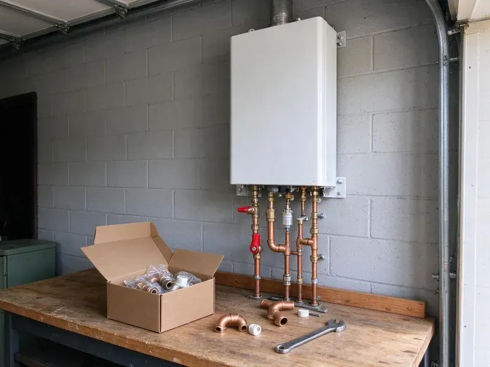

Water Softener Installation in Grand Rapids, MI
Scaled water heater or crusty faucets in Grand Rapids, MI? We install softeners, conditioners and filters matched to your water.
- Loop Plumbing Available
- Licensed Plumbers
- Prompt Local Service
- Insured Plumbers

Schedule Your Water Softener Installation in Grand Rapids, MI
We help you pick the right size and install it cleanly.
Water Softener Installation in Grand Rapids, MI
CHV Plumbing looks at more than hardness before recommending a system. We also test for iron and chlorine and ask about household size, because both affect the right softener and whether you need a carbon tank too. Sized right, it runs for years.
Our expertise includes:
- Clean plumbing with a bypass valve
- Accurate hardness tests
- Salt-based softeners with Fleck and Clack valves

Additional Plumbing Installation Services in Grand Rapids, MI
We install water heaters, pumps, lines, and fixtures across Grand Rapids, MI with careful, permitted work that passes inspection the first time.


Customers
Why Choose CHV Plumbing for Water Softener Installation in Grand Rapids, MI?
Salt-based ion exchange, salt-free conditioners and combination filter systems all have their place. We lay out what each type actually removes and what it costs to run, then help you choose. The choice stays yours.
- Clean Installation, Quality fittings and a bypass valve keep future service simple.
- Good Systems, We install long-lasting softeners from established brands.
- Appliance Life, Shield your water heater, dishwasher and washer from hard water scale.
Citywide Coverage
Water softener installs in every neighborhood across Grand Rapids are covered by CHV Plumbing. Every side of town is on our regular routes.
Experienced Team
Every CHV Plumbing plumber takes pride in clean, careful work. Your softener should run right from the first regeneration.
Safety-First Approach
Our team follows safety protocols throughout. You get a professional install that meets every requirement.
Trusted Certified Grand Rapids Plumbing Services Professionals
At CHV Plumbing, we are proud to offer certified plumbing services throughout Grand Rapids, MI. Those papers on the wall mean something. Every repair, install and maintenance visit follows strict safety and quality rules, and the plumbers doing the work carry recognized industry credentials.
Call Us Now PHCC Plumbing Contractor Recognition
PHCC Plumbing Contractor Recognition Better Business Bureau (BBB) Accreditation
Better Business Bureau (BBB) Accreditation Angi Certified Pro
Angi Certified Pro ISO 9001 Quality Management Certification
ISO 9001 Quality Management CertificationWater Softener Installation Services in Grand Rapids, MI
Culligan Water Softener Installation in Grand Rapids
Culligan systems are common in homes around here, and we install and connect them. We follow Culligan's requirements for the drain, bypass and electrical, and we program the system for your tested hardness so it does not over-regenerate. We handle all of it. A loop saves time.

Reverse Osmosis Drinking Water Systems in Grand Rapids
Reverse osmosis pushes water through a fine membrane that removes most dissolved solids, including the sodium a softener adds. We install RO units under the kitchen sink with a dedicated faucet, and many can also feed a refrigerator water line or an ice maker. Pairs well with a softener. Filters get changed on schedule.
High-Efficiency Water Softener Installation in Grand Rapids
High-efficiency softeners use upflow brining and metered valves to cut salt and water use. A new metered unit often uses far less salt and water than an older model on a timer, which shows up on both bills. The savings add up. Several models are available.
Combination Softener and Carbon Filter Systems in Grand Rapids, MI
City water often carries chlorine or chloramine that affects taste and smell. A carbon filter placed ahead of the softener removes those chemicals and protects the resin, since chlorine slowly breaks resin beads down over the years. You will taste it. Setups can be two tanks or one dual-stage tank.
Water Softener Replacement Services in Grand Rapids, MI
Worn-out softeners usually show it in one of two ways, hard water at the tap or a brine tank that never drops. We remove the old unit, check the loop and drain for problems and install a newer model that fits your current hardness and household size. Disposal is included. The work is usually done in a few hours.
Residential Water Softener Installation in Grand Rapids
Hard water costs homeowners money in shorter appliance life and extra cleaning. Our residential installs start with a test and a few questions about water use, then we pick a grain capacity that regenerates about once a week for your household. Weekly is the sweet spot. Every detail is handled on one visit.
Commercial Water Softener Installation in Grand Rapids, MI
Restaurants, hotels and laundromats feel hard water in their equipment first. We install bigger tanks or twin alternating units for businesses, which keeps soft water flowing during regeneration. Equipment lasts longer. We schedule around your hours.

Salt-Free Water Conditioner Installation in Grand Rapids
Salt-free conditioners do not soften water, and we say so up front. They change the minerals into crystals that do not stick to pipe walls and heating elements, so scale drops off without adding sodium or using a drain line. Little upkeep is needed. They suit moderate hardness.
Water Softener Installation Near Me in Grand Rapids, MI
Searching for water softener installation near me in Grand Rapids, MI usually starts with scale on a new faucet. CHV Plumbing keeps local crews close and test kits on every truck, so we can test your water on the first visit and often install the same week once you pick a system. Testing is free.
Local plumbers know local water, and CHV Plumbing has tested a lot of it. Years of tests around the area tell us which systems work and when iron or chlorine needs a separate filter. Calls get answered quickly.
CHV Plumbing at a Glance
- Licensed and insured plumbers serving Grand Rapids, MI
- Same-day appointments and 24/7 emergency response
- Clear written estimates, no hidden fees
- 4.9-star rated by 670+ Michigan customers
Grand Rapids Map
Grand Rapids Information
- Population
- 196,608
- Area codes
- 616/231/269
- Service area
- Grand Rapids and communities within 40 miles
- Nearby
- Wyoming, Kentwood, Holland, Muskegon
Hard water leaves a white crust on faucet aerators and a layer of scale in the bottom of the water heater, which is why a softener makes sense in Grand Rapids, MI homes. Homes around Grand Rapids on private wells usually benefit from a water test before picking a filtration system, since mineral levels vary widely.
Talk to a Plumber
Call CHV Plumbing for reliable plumbing work done by licensed pros in Grand Rapids, MI.
Our Specialized Plumbing Services in Grand Rapids, MI
At CHV Plumbing, you get every kind of plumbing service from one company across Grand Rapids, MI. We go from leak detection all the way to full system installations, for homes and commercial buildings, and we do it quickly at a fair price. Take a look at our core services below:


Our Water Softener Install Process in Grand Rapids, MI
Our process is simple and in plain order, with a water test at the start.
Request a Quote
Contact us at (810) 380-5918 to set up a visit. We test your water and give you a detailed quote with no obligation.
System Selection
Our plumbers help you choose the right system based on hardness, use and budget.
Installation
Licensed plumbers install the softener, with every connection done to code, then test it.
Frequently Asked Questions About Water Softener Installation in Grand Rapids
Most Grand Rapids, MI softener installs land between $1,500 and $4,000. That typically covers the unit itself and the labor to plumb it in, program it and test it, with any loop or drain work listed separately. Capacity affects price. We give written pricing up front.
Control valves usually carry about 5 years, and tanks often 10 or more. Our labor has its own warranty.
On an existing loop, installs usually take two to three hours. Adding a new loop can take half a day or more.
Manufacturer coverage on the unit is often 5 to 10 years on major parts. Our installation workmanship is usually covered for a year, and we install to the manufacturer specs so their warranty stays valid.
Half a day covers most residential installs, usually three to six hours. Existing plumbing, a loop or no loop and the type of system all affect the time. Loops speed it up.
A softener targets calcium and magnesium to stop scale. Filters handle chlorine, sediment and taste, and many homes pair the two.
With a loop in place, some homeowners can do it, but air gaps, bypass valves and programming matter. A professional install helps avoid leaks and weak softening.
Some areas require a plumbing permit for this kind of work. CHV Plumbing will tell you if you need one in Grand Rapids and can help with the application.
What Our Customers Say About Our Plumbing Experts

Rachel N.
Hard water was leaving white crust on every faucet and our dishwasher was struggling. The tech tested the water, recommended a softener sized for a family of five, and installed it with a bypass valve in one afternoon. The spots on our glasses are gone.
Water Softener · Grand Rapids, MI
Jessica T.
We were adding a gas range in a kitchen remodel and needed a new line run from the meter. The plumber pulled the permit, ran the pipe through the crawl space, and had it inspected and approved within the week.
Gas Line Repair · Wyoming, MI
Marcus H.
Grease from the fryer line kept clogging the kitchen drain at my diner. CHV Plumbing hydro jetted the line after closing, showed me the buildup on camera, and set us up on a quarterly cleaning so it does not catch us on a Friday again.
Drain Cleaning · Grand Rapids, MI
Karen W.
After our third pinhole leak in copper, we stopped patching. CHV Plumbing gave us a written plan room by room and repiped the house in PEX while we stayed in it. The crew covered our floors every morning and cleaned up every night.
Repiping · Muskegon, MI
Carlos V.
Our house still had galvanized pipe, and upstairs the shower was a trickle. The crew repiped everything in PEX over three days and patched every drywall hole before they left. The pressure difference is night and day.
Repiping · Kalamazoo, MISofia M.
Two new toilets went in during one visit. The tech set them on new wax rings and swapped the old supply lines. He also noticed our bathroom faucet dripping and replaced the cartridge while he was there. No mess left behind.
Toilet Installation · Holland, MI